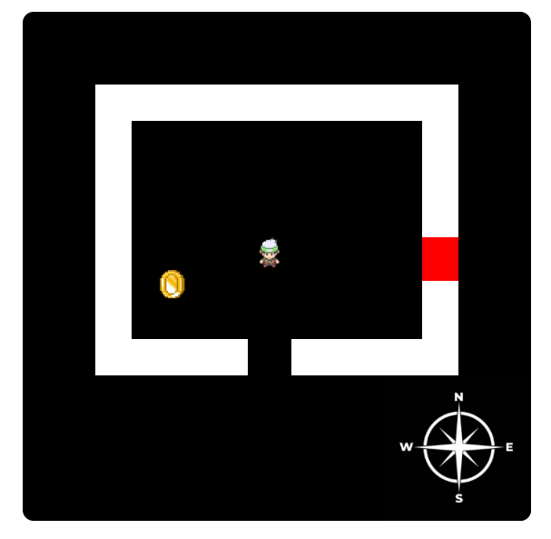

-
Educación Secundaria Obligatoria | IES Sant Marçal (2015/2019)
-
Grado Medio En Sistemas Microinformáticos en Redes | CC Es Liceu (2019/2021)
-
Grado Superior En Desarrollo de Aplicaciones Web | CC Es Liceu (2021/actualidad)
¡Buenas! Soy Ricardo Villanueva, estudiante de Desarrollo de Aplicaciones Web. Nací en Palma de Mallorca en 2003, me apasiona el mundo de los sistemas informáticos y como funcionan las telecomunicaciones, a aparte el mundo de la programación también me entusiasma y por ello me lo tomo como un reto. Como hobbies tengo la interpretación musical y la lectura.
Bienvenido a mi CV interactivo! Si quieres consultar alguno de los apartados haz click sobre los elementos
-
Soporte IT | Nunsys (07/2022-10/2022)
Puesto de soporte helpdesk y resolución telemática y presencial de incidencias informáticas en el ámbito hospitalario. En este puesto he desarrollado actividades como: la configuración de equipos en dominio de Windows Server, tratamiento de usuarios a nivel de Active Directory, soporte de hardware, reparaciones, configuración de cámaras ip, soporte de incidencias a nivel de usuario en SAP
-
Soporte IT (Estudiante En Prácticas) | Camper (03/2021-05/2021)
Desarrolle actividades de soporte informático helpdesk a parte de la puesta en marcha de equipos informáticos monoestacion, configuración de aplicaciones de vpn y similares en windows y macOS. También configuramos equipos en dominio y gestionábamos usuarios en Windows Server Active Directory.
-
La música es uno de mis grandes intereses, desde los 14 años empecé a tocar el piano y con 17 empece con el saxofón. La verdad que es una afición que me permite evadirme y desarrollar otras aptitudes que mi campo profesional no me permite
-
El mundo del Arduino es un apartado al que no me dedico profesionalmente, pero que si me gusta bastante y aprovecho en mi tiempo libre para seguir formándome en ello
-
La mitología japonésa y simbología es un tema que también me tiene muy atrapado, me resulta fascinante la cantidad de sabiduría y conocimiento que estas historias suelen aportar
-
BarCode =>
Un programa que permite leer y decodificar códigos de barras y a la inversa, pasar un mensaje, codificarlo y generar una imagen con el código de barras
-
The Legend Of Java =>
Este es un juego web en el que puedes escoger entre diferentes mapas para completar una mazmorra. Este está desarrollado en Java e utiliza Java API Servlets y en front CANVAS API para mostrar los escenarios e interactuar
 -
MyOWnRestaurant =>El desarollo de una pagina estatica sobre un restuarente de ejemploS


Coreo @=> --- ricardovillanueva282@gmail.com
Numero de contacto => +34 679750261